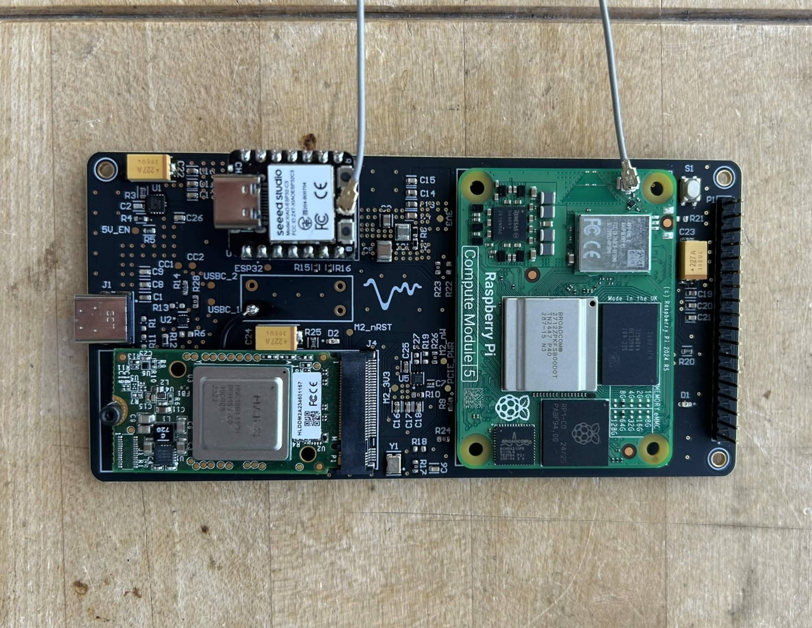
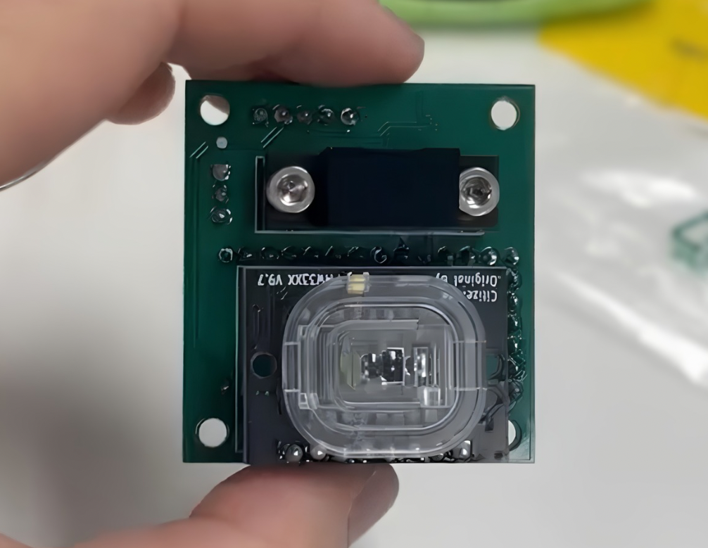
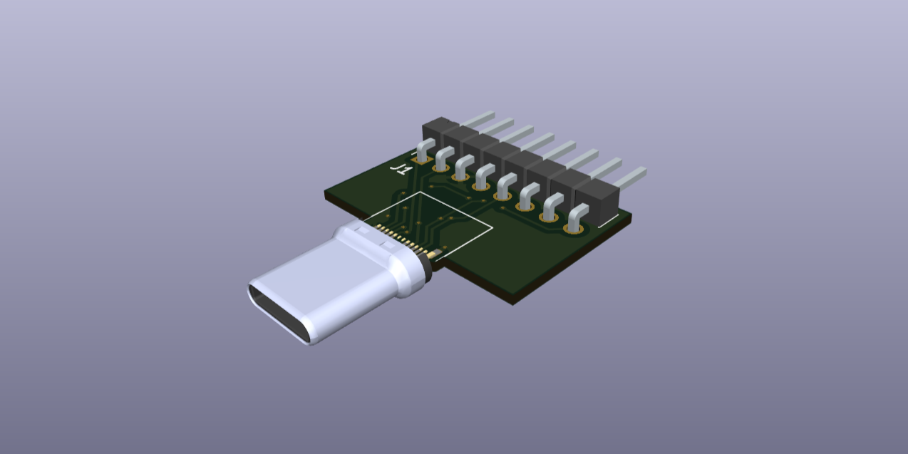
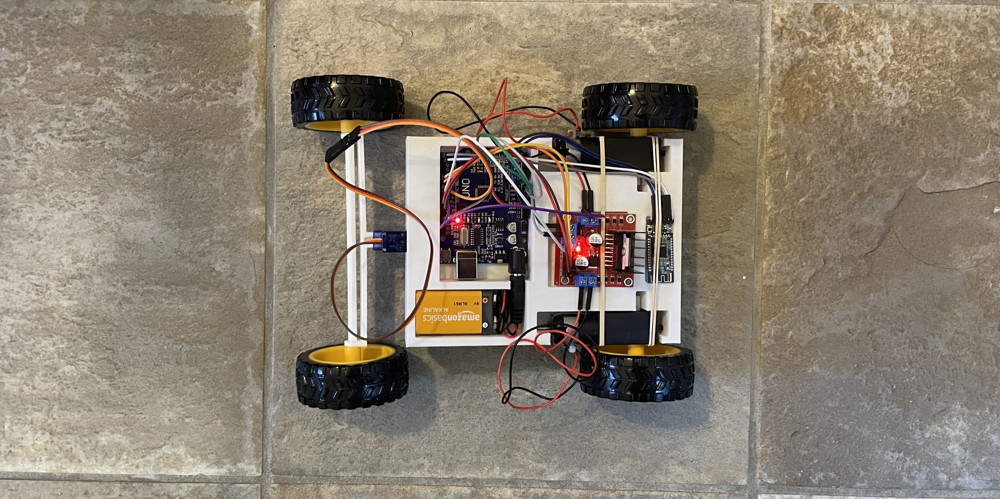
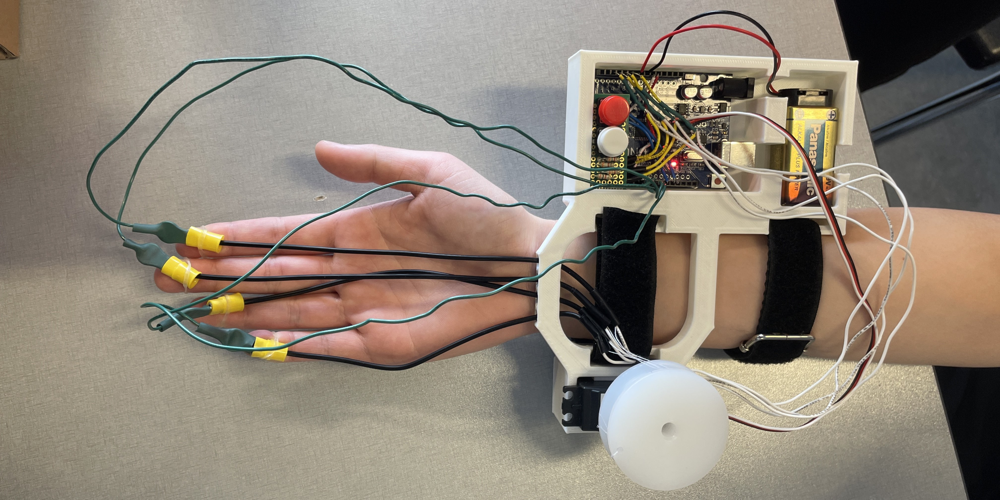
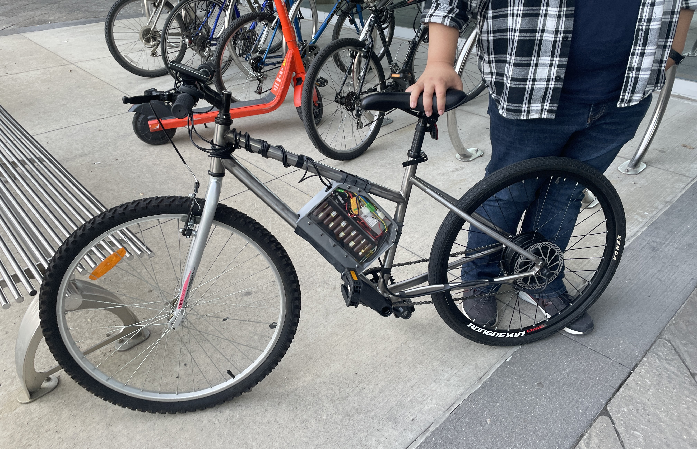
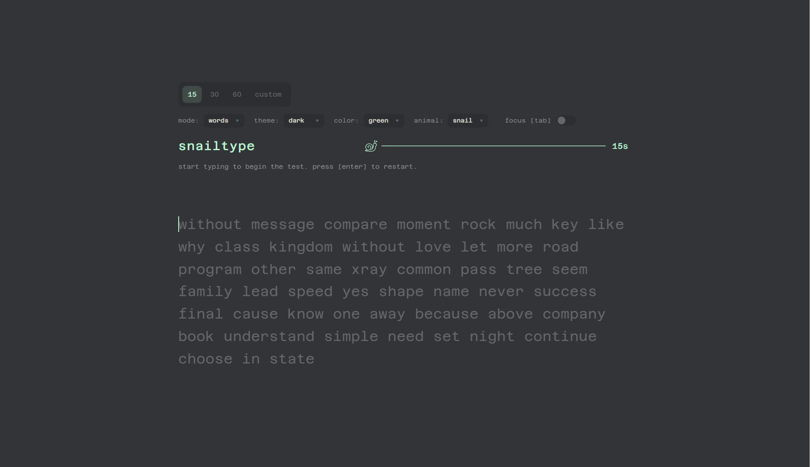
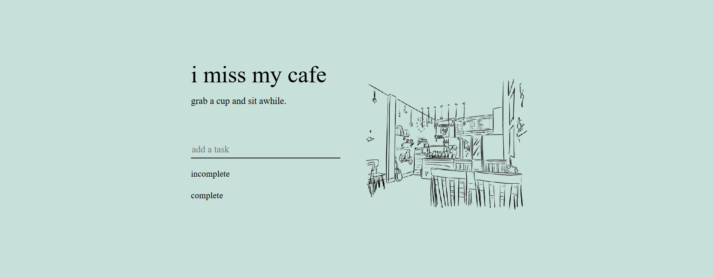
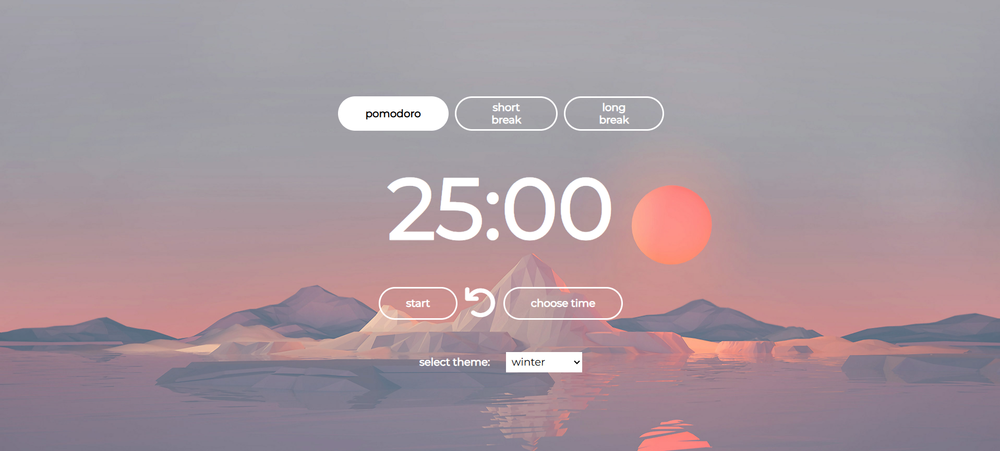
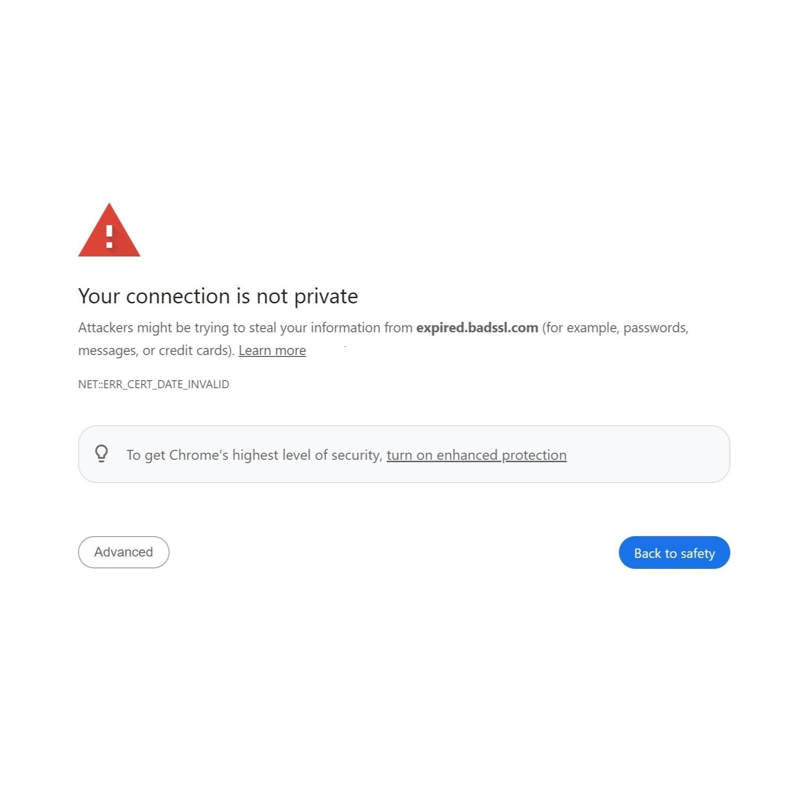

VocalPoint — Capstone Project
Assistive listening device with custom PCB and real-time audio processing.

Optical Flow Velocimetry PCB
Custom PCB integrating an optical flow sensor and distance sensor to measure conveyor belt speed on a manufacturing assembly line.

USB-C PICkit Adapter
Custom PCB adapter enabling USB-C compatibility for PICkit 4 debugging workflows.

Box DJ
Portable DJ mixing system integrating embedded controls, audio processing, and Spotify integration.

Remote Controlled Car
Bluetooth-controlled vehicle integrating embedded electronics, motor control, and custom mechanical design.

Hand Rehabilitation Device
Assistive rehabilitation device designed to support finger mobility recovery.

Electric Bicycle
Student design project building a fully functional electric bicycle from the ground up.

snailtype
Typing practice game combining animated gameplay, scoring, and keyboard interaction.

i miss my cafe
Ambient study application combining task management and customizable background audio.

Pomodoro Timer
Web-based productivity application implementing customizable Pomodoro work cycles and themes.

SSL Certificate Checker
Python tool for monitoring SSL certificate validity and website security status.